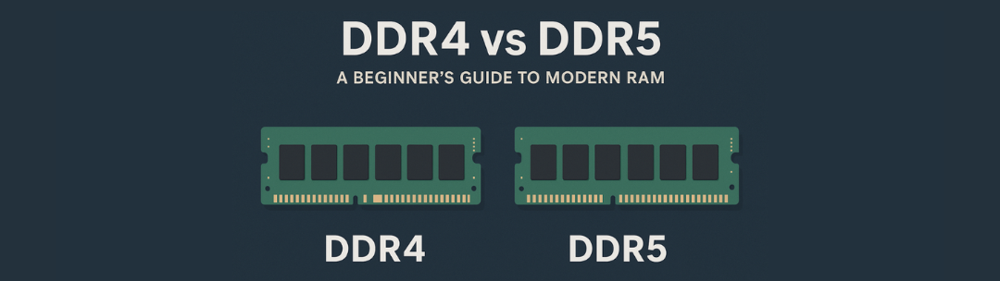
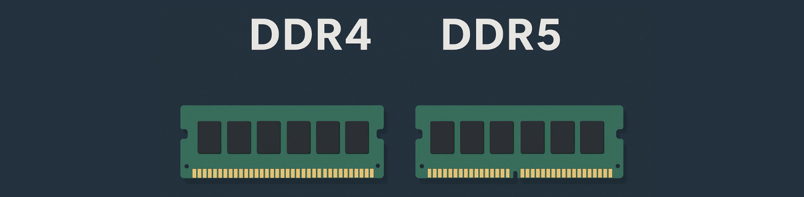

DDR4 vs DDR5: A Beginner's Guide to Modern RAM
A simple, clear breakdown of how modern RAM works — and what really sets DDR4 apart from DDR5.
RAM is your computer's short-term memory, and choosing between DDR4 and DDR5 is one of the first decisions you'll face when building or upgrading a PC. This guide breaks down what you need to know — no jargon, just clear explanations.
Understanding RAM Basics
What Is RAM and Why Does It Matter?
RAM (Random Access Memory) is your computer's short-term memory. When you open a program, load a game, or switch between browser tabs, your PC uses RAM to keep that information ready and accessible. Think of it like a desk workspace: the bigger and faster your desk, the more projects you can work on at once without slowing down.
Without enough RAM, your computer starts using slower storage (like your SSD or hard drive) as a backup, which causes stuttering, lag, and frustration. More RAM means smoother multitasking, faster app launches, and better overall performance.

What Does "DDR" Mean?
DDR stands for Double Data Rate. It's the type of RAM technology used in modern PCs. Each new generation — DDR3, DDR4, DDR5 — brings improvements in speed, efficiency, and capacity.
These generations are not backward-compatible. You can't use DDR5 RAM in a motherboard designed for DDR4, and vice versa. The physical slot and electrical design are different. When choosing RAM, you're locked into whichever generation your motherboard and CPU support.
Right now, DDR4 and DDR5 are the two standards you'll encounter when building or upgrading a PC. DDR4 has been the mainstream choice since 2014, while DDR5 launched in 2021 and is gradually becoming the new standard.

The Key Differences Between DDR4 and DDR5
1. Speed — How Fast Data Moves
DDR5 is faster. DDR4 typically runs between 2400 MHz and 3600 MHz, with high-end kits pushing to 4000 MHz or beyond. DDR5 starts at 4800 MHz and can reach 6000 MHz or higher, even in consumer kits.
That speed difference means DDR5 can move more data in less time. But speed isn't everything — you'll only notice the difference in certain situations, which we'll cover later.
Quick tip: Higher MHz = faster data transfer, but real-world impact varies by use case.
2. Efficiency and Power — Running Cooler
DDR5 is more efficient. It runs at 1.1 volts compared to DDR4's 1.2 volts. That might sound tiny, but lower voltage means less heat and slightly better power efficiency — helpful for laptops and high-performance systems running under heavy load.
DDR5 also has on-module power management, meaning each stick handles its own voltage regulation. This makes the system more stable and allows for better overclocking potential down the line.
Quick tip: Lower voltage = cooler operation and better efficiency, especially in compact builds.
3. Capacity — How Much You Can Install
DDR5 supports higher capacities per stick. While DDR4 maxes out at 32GB per module in consumer kits, DDR5 can go up to 64GB or more per stick. For most users, this doesn't matter yet — 16GB or 32GB is plenty for gaming and general use.
But if you're planning a workstation build for video editing, 3D rendering, or heavy multitasking, DDR5's capacity ceiling gives you more room to grow.
Quick tip: For gaming/general use: 16GB minimum. For content creation: 32GB+.
4. Stability and Latency — Response Time
DDR4 is mature and stable. It's been around for years, so manufacturers have fine-tuned performance, and compatibility issues are rare. Latency (the delay before data starts moving) is also slightly better on DDR4, especially in well-tuned kits.
DDR5 has higher raw latency numbers, but the faster speeds often balance that out. Early DDR5 had more stability quirks, but those have mostly been ironed out with newer motherboards and BIOS updates.
Quick tip: DDR4 = proven and stable. DDR5 = newer tech with growing pains mostly solved.
Real-World Performance: When Does It Actually Matter?
Everyday Tasks and Browsing
Winner: Both are equal
For everyday use — web browsing, email, document editing, streaming videos — you won't notice a difference between DDR4 and DDR5. Both handle these tasks effortlessly. Even 16GB of DDR4 at 3200 MHz is more than enough.
Recommendation: Save money with DDR4 if this is your primary use case.
Gaming
Winner: DDR5 (slight edge)
In gaming, DDR5 can provide a small FPS boost in specific scenarios, especially at 1080p with a high-end CPU and GPU. Games that are CPU-bound or rely on fast memory access see the biggest gains — usually around 5-10% better performance.
But most gamers won't see a dramatic difference. If you're gaming at 1440p or 4K, your GPU becomes the bottleneck, and RAM speed matters less. DDR4 at 3600 MHz is still excellent for gaming in 2025.
Recommendation: DDR4 is great for 1440p/4K gaming. Consider DDR5 for 1080p high-refresh competitive gaming.
Multitasking and Content Creation
Winner: DDR5
DDR5 shines when you're running multiple demanding programs at once — editing 4K video, working with large 3D models, compiling code, or running virtual machines. The extra speed and bandwidth help move data faster, reducing wait times.
If you're a content creator, streamer, or power user who frequently maxes out your system, DDR5's advantages become more noticeable.
Recommendation: DDR5 is worth it for professional workloads and heavy multitasking.
Practical Considerations
Compatibility: What Works With What?
Your CPU and motherboard determine which RAM generation you can use. You can't mix and match.
Intel: 12th-gen (Alder Lake) and 13th-gen (Raptor Lake) support both DDR4 and DDR5, depending on the motherboard. 14th-gen and newer support DDR5 primarily, though some DDR4 boards exist.
AMD: Ryzen 7000 series (AM5 platform) and newer support DDR5 only. Older Ryzen CPUs on AM4 use DDR4.
Before buying RAM, check your motherboard specifications. The board's product page will clearly state whether it supports DDR4 or DDR5. If you're building new, choosing DDR5 gives you a longer upgrade path, but DDR4 systems are still viable.
Quick tip: Always verify your motherboard's RAM support before purchasing!
Pricing: Is DDR5 Worth the Extra Cost?
DDR5 used to be significantly more expensive, but prices have dropped considerably. As of 2025, DDR5 kits are only slightly more expensive than DDR4 — sometimes by $10-30 for a 16GB or 32GB kit.
If you're building a new system on a platform that supports DDR5, the price difference is small enough that it makes sense to go with DDR5 for future-proofing. But if you're on a tight budget or upgrading an existing DDR4 system, sticking with DDR4 is still a smart choice.
Don't feel pressured to upgrade to DDR5 if your current system runs DDR4. The performance difference isn't dramatic enough to justify replacing your entire motherboard and CPU just for RAM.
Quick tip: Price gap is narrow now — DDR5 is a good investment for new builds.
Bottom line: Both DDR4 and DDR5 are excellent choices. DDR4 is proven, affordable, and still plenty fast for most users. DDR5 is the future, with better efficiency, speed, and room to grow. Choose based on your platform, budget, and how long you plan to use the system. Either way, modern RAM is reliable, and as long as you choose the right capacity (16GB minimum, 32GB for heavy use), you'll have a smooth experience.
Want to learn more about building your first PC? Start with the basics.
👉 Read the Beginner's Guide to PC Parts